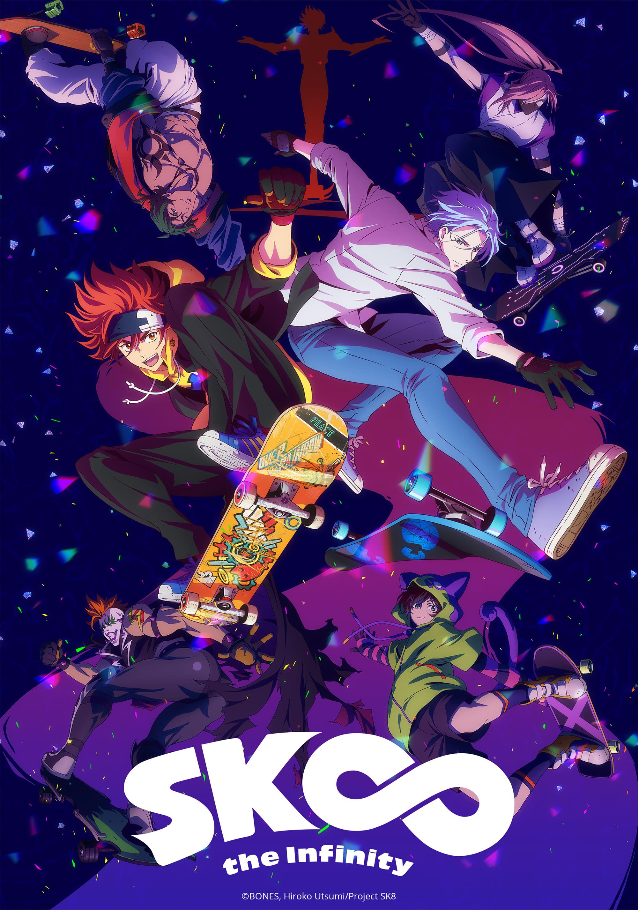
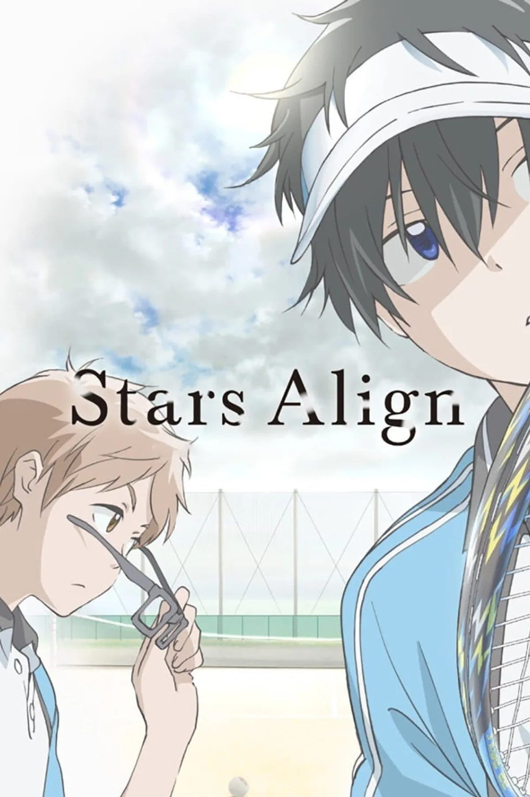
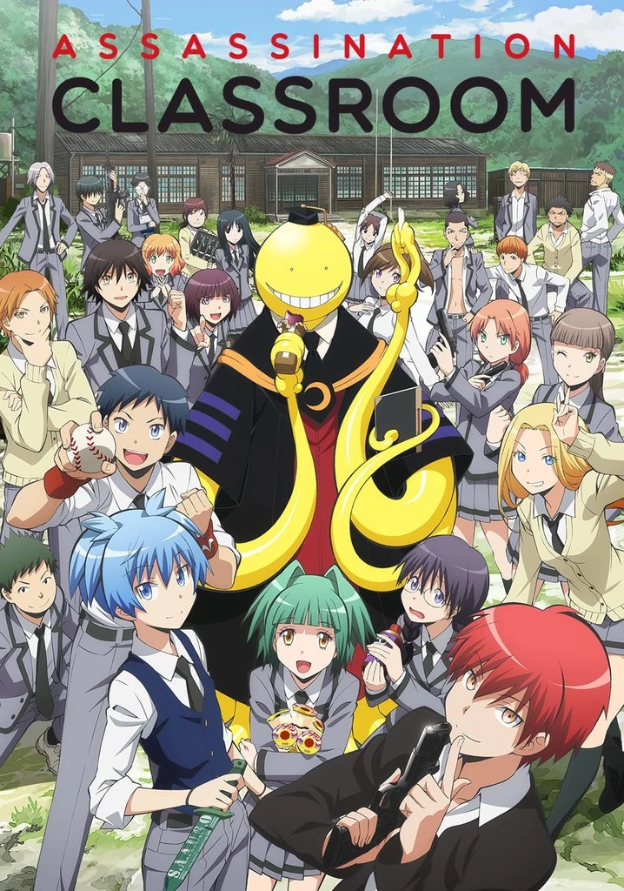
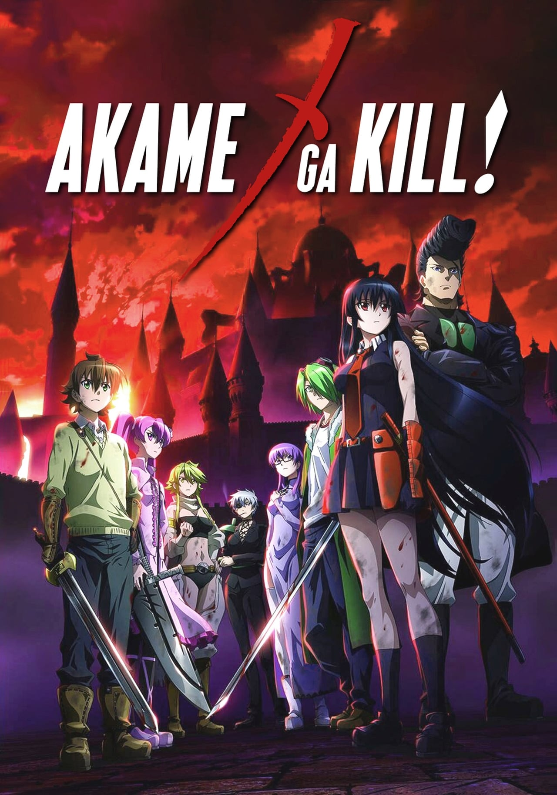
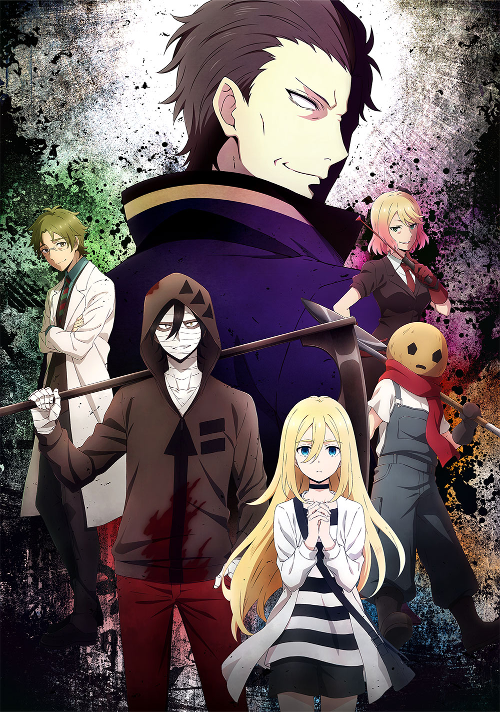
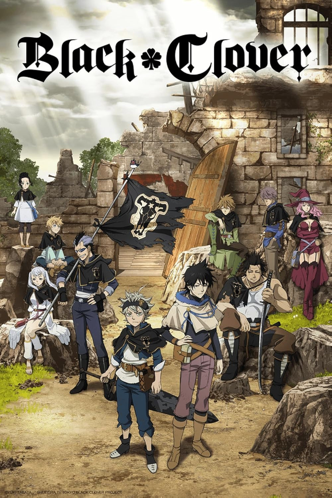
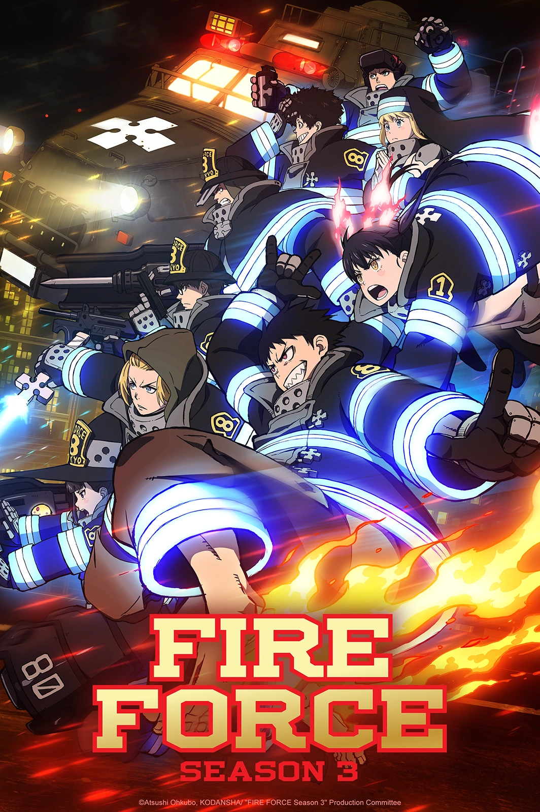
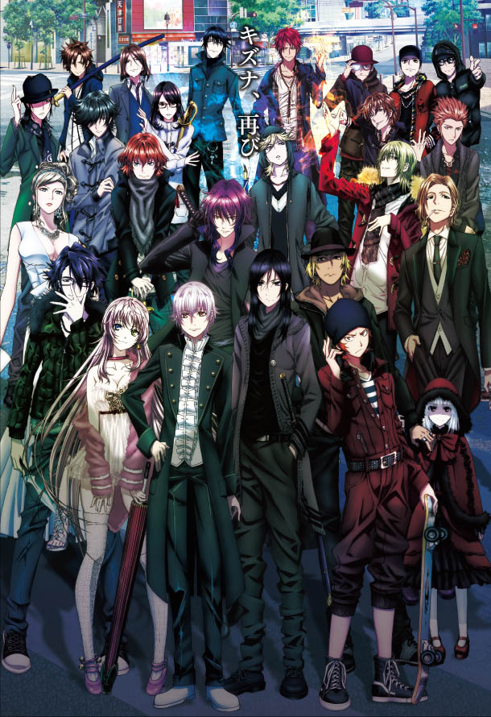
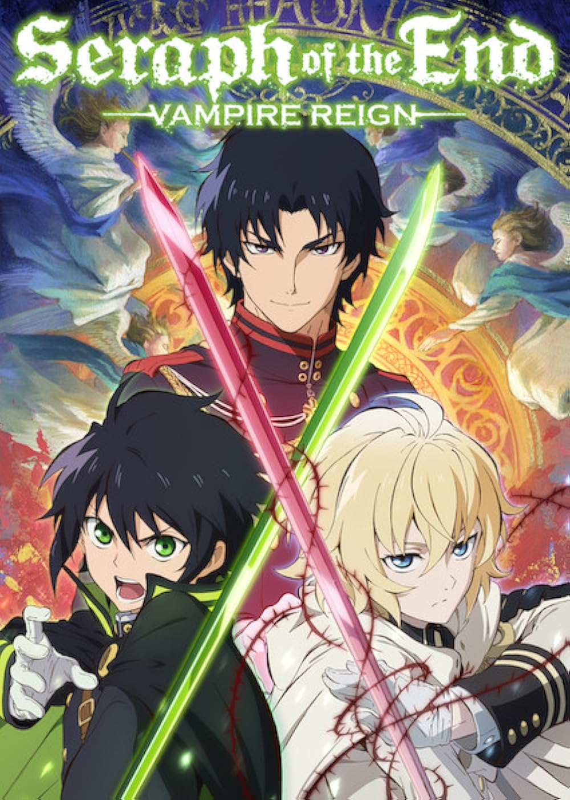

Sk8 the infinity
En ny kille kommer in i klassen och blir bästa kopmis med en som skatar illegalt och sedan får de fler vänner och blir som en familj.

Stars Align
Några unga tonåringar spelar softboll som senare upptäcker saker om varandra.

Assissanation Classroom
En gymnasieklass i en skola blir isolerade för att de är den "sämsta" klassen men då får de ett hemligt men stort uppdrag, att döda en alien som även är deras lärare.

Akame Ga Kill
En ung svärdsman åker runt i huvudstaden för att tjäna pengar men öpptäcker att staten är korrupt och finner sig med en grupp som slåss mot staten, Night Raid.

Angels of death
En ung tjej finner sig fast i en märklig byggnad som hon försöker att fri från, men varje våning har en ny miljö och galen person. Då träffar hon på en psykopat som blir hennes kompis och de hjälper varnadra ut.

Black Clover
I en värld där magi är allt vill Asta från en liten by bli trollkarskungen men han har ingen magi alls.

Fire Force
Shinra har haft många motgångar pågrund av sina krafter, många har sätt ner på honom men trotts det vill han vara med och hjälpa folk från ondska.

K-project
Shiro är en vanlig elev på ett gymnasiumigen och personer dyker upp och vill skada honom, de vet vem han är men han vet inte dem.

Seraph of the end
Världen har nästan gått under när ett virus bröt ut och dödade nästan 90% av jordens befolking, utom några få och barn under 12 år. Då kom vampyrerna fram och började att ta över men det finns personer som kämpar mot dem.